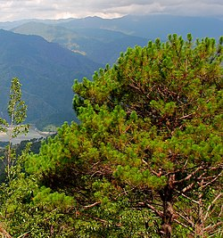

เมืองแห่งทะเลภูเขา สุดหนาวในสยาม
จังหวัดเลย ก่อตั้งขึ้นเมื่อ พ.ศ. 2396 ในสมัยรัชกาลที่ 4 เป็นจังหวัดชายแดนในภาคตะวันออกเฉียงเหนือตอนบน มีลักษณะภูมิประเทศที่โอบล้อมด้วยภูเขาสลับซับซ้อนและมีอากาศหนาวเย็น จนได้ชื่อว่า "เมืองแห่งทะเลภูเขา" และมีประวัติศาสตร์ยาวนานเกี่ยวพันกับวัฒนธรรมล้านช้าง
"เมืองแห่งทะเลภูเขา สุดหนาวในสยาม
ดอกไม้งามสามฤดู ถิ่นที่อยู่อริยสงฆ์
มั่นคงความสะอาด"
ต้นสนสามใบ (Pinus kesiya)
เป็นไม้ยืนต้นสูงใหญ่ ใบเป็นรูปเข็ม มักขึ้นตามภูเขาสูงที่มีอากาศหนาวเย็น เช่น ภูกระดึง และภูเรือ
